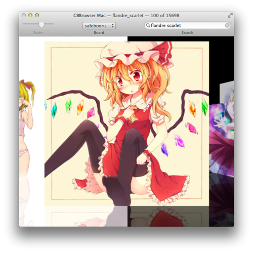
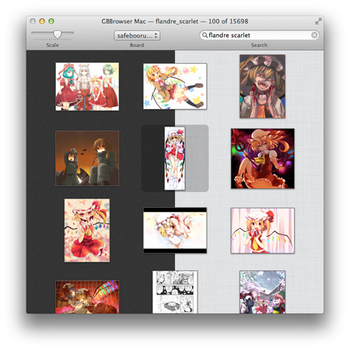
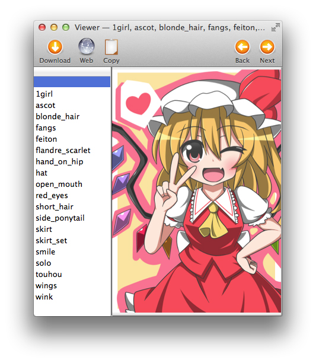
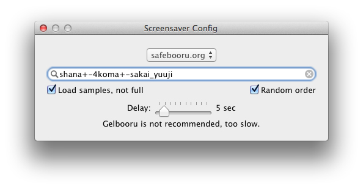
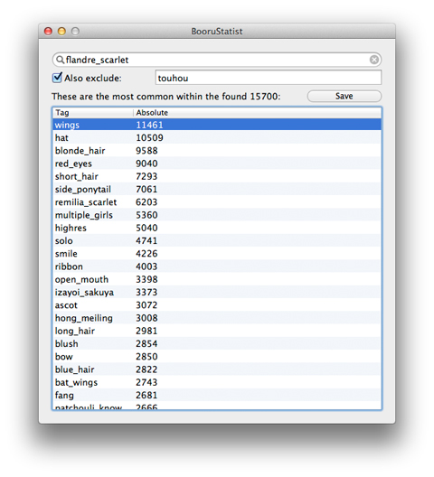

I see a white Flow and I want it into black. Well now you can.
Use one at night and the other at the daytime. Change it depending on the weather. Switch it when you're in the mood to. It's all up to you.

Same goes for the list. Who knows what would you want a minute later.
If you're not a fan of Cover Flow, you can use the iPhoto-alike list view. Also available in black and white.

Fully-featured viewer. View the tags, download and copy.
If you want to take a closer look, just double-click the picture to bring up the viewer.

See the latest of your favourites. As a screensaver.
Just enter your favourite search string, set BooruSaver as your screensaver, and you're good to go!

Would like to know the numbers? Meet the first ever imageboard statistics tool.
Enter the character name, or pretty much any other tag into the search field, enter the tags that might break the results into the exclusion field, and then look through the results. That's it.

Want it? Then get it.
Requires Mac OS X 10.7+. Tested only on Mac OS X 10.8.
2GB+ of RAM recommended.